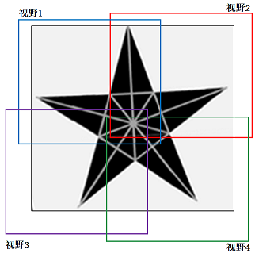
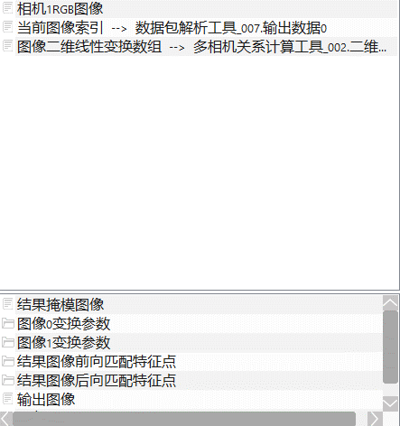
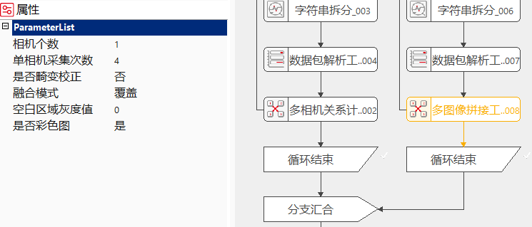
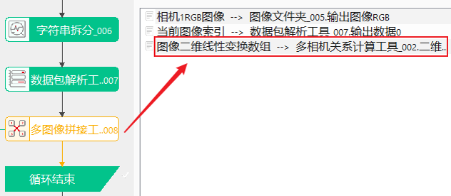
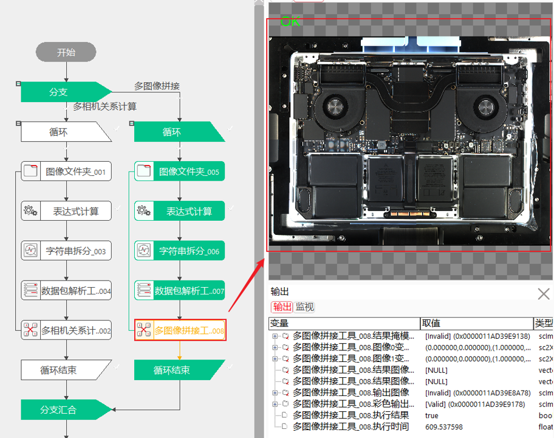
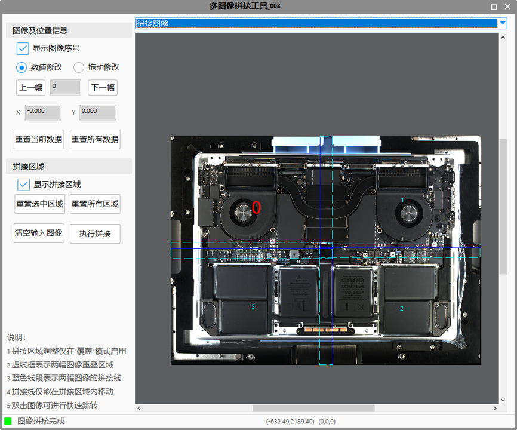
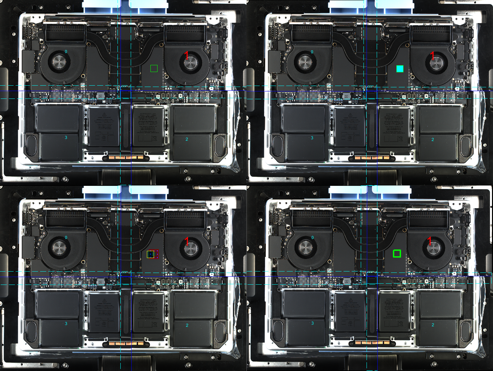
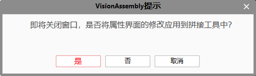

图像拼接是指将多幅来自同一场景的具有一定重叠区域的小尺寸图像合成为一幅大型的无缝高分辨率图像的技术，这些图像可以是在不同时间、不同视角或者不同传感器获得。
由于面阵相机的视野和分辨率有限，有时单个相机可能无法满足大视野、大幅面，这时需要将多个相机获取的图像进行拼接处理，可以使用多图像拼接工具。

图像拼接的功能是将多幅图像组合为一幅结果图像。拼接时需要考虑多幅图像的匹配特征模式，这里有两种特征模式：一、图像对应的二维线性变换（将输入图像变换到共同的客户坐标，含旋转、缩放、平移）；二、输入图像之间对应特征点。图像拼接过程中，对于多幅图中的重叠区域，使用不同的融合算法进行处理，融合算法即计算重叠区域像素的灰度值。





显示图像序号
通过勾选此选项，可以在拼接结果图像中显示/隐藏子图的序号，如图所示。索引值所对应的图像序号以红色字体增大显示，非索引值图像序号以天蓝色非增大字体显示。
数值修改
通过此选项，允许用户在平移数据编辑框内对除第一幅图像外的其它图像平移数据进行修改，单次修改数值的范围在-100 ~ 100之间，当用户输入的值和初始值差值过大时，会弹窗提示用户，并将其改为初始值。（说明：由于其它图像是以第一幅图像为基准，所以不允许修改第一幅图像的平移数据，其值始终为0，0。
拖动修改

通过此选项，允许用户以拖动特征矩形的方式进行平移数据修改，其对平移数据的修改逻辑和数值方式类似，单次仅允许用户在-100 ~ 100之间进行拖动，当用户拖动范围过大时，会弹窗提示用户，并将矩形区域恢复至拖动前的位置。
其操作说明如图所示，当选择拖动修改时，会在视图中显示特征矩形框，用户需要将矩形框拖动到想要移动特征的区域，然后在矩形区域内部的激活区域进行点击，然后矩形会处于填充状态，此时表示用户激活了拖动修改数值的功能，然后用户可以将此矩形拖动至要重合的目标位置，在拖动过程中初始位置和实时位置的填充状态均会变为半透明，方便用户确认目标位置，完成拖动后，工具会自动计算初始位置和目标位置的偏差量，并将此值更新到数值编辑框内，然后完成拼接。
备注：当启用此功能后，每次完成拖动后，均会自动执行拼接，请用户完成拖动后，观察提示栏的提示信息，待拼接完成后再进行其它操作。
上一幅/下一幅
通过这两个按钮，可以查看对应索引值的平移数据。
显示拼接区域
通过勾选此选项，可以在拼接结果图像中显示/隐藏拼接区域，如图所示的天蓝色虚线矩形框和蓝色线段。其中天蓝色虚线矩形框为相邻图像的重合区域，蓝色线段为两幅相邻图像的拼接线位置。拼接线仅允许在重合区域内移动，当用户将线段拖动出重合区域时，则会将其重置到重合区域边缘处。
重置按钮
4个重置按钮，可以按照其命名含义对响应的数据进行重置，每次点击重置按钮时，均会弹出提示框向用户确认是否要对数据进行重置，以防止用户不小心误点。其中“重置当前数据”和“重置所有数据”是对图像的平移数据进行重置，“重置选中区域”和“重置所有区域”是对相邻图像的拼接区域进行重置。
清空输入图像
点击该按钮将清空输入图像。
执行拼接
当用户首次进入高级属性界面，或者修改了某些数据的数值后，可以点击此按钮查看拼接结果图像。
关闭窗口

当用户关闭高级属性界面时，如果修改了某些数据的数值后，则会弹出图示所示的提示框，向用户询问是否将属性界面的修改应用到主工具中。当用户点击“是”则会关闭窗口并将修改更新到主工具中，当用户点击“否”则会关闭窗口但是不将属性界面的修改更新到主工具中，当用户点击“取消”则不会关闭属性界面。
| 现象描述 | 解决方法 |
|---|---|
| 图像拼接明显错误 | 检查数据链中图像输入的顺序是否和标定时图像的输入顺序一致。 |
| 图像拼接有轻微错位 | 进入属性界面调整响应图像对应的平移数据，其常见等的形成原因见表格下方描述。 |
| 图像拼接失败 | 根据工具的报错信息进行修改，常见的未图像的数量和二维线性变换数组中的值数量不相等 |
拼接错位原因说明
1）标定结果存在误差。排查此问题的方法为，开启”多相机关系计算工具“的拼接功能，即将其属性栏中的”是否执行拼接“置为是，然后重新执行完整的标定流程，当完成标定后，会在工具的result视图中输出靶标的拼接结果，用户通过靶标的图像拼接结果确认是否存在标定错误的情况。
2）实时拼接图像的成像面和标定时的靶标成像面高度不一致。由于在进行相机标定时，会将靶标放置在一个平整的载物台上，但是此载物台的高度和实时拼接时的产品成像面不一定一致，导致标定的结果无法准确的表示不同相机之间的实际空间转换关系，并且在常见的图像拼接应用场景中（如超大视野的IMAC主板缺陷检测），实物的各个成像面通常存在高低不平的现象，也会导致二维平面内的标定结果无法准确表示三维空间之间的转换关系，从而导致拼接图像之间存在轻微的错位情况。
| 参数名称 | 参数说明 |
|---|---|
| 相机个数 | 支持的相机个数，范围为1~16 |
| 图像个数/相机 | 每个相机采集的图像数量，范围为1~16，当相机个数为1时，此值最小为2 |
| 是否畸变校正 | 是否对输入的图像进行畸变校正 |
| 校正类型 | 隶属于畸变校正，确定畸变校正的类型，当畸变校正为是时显示此参数 |
| 是否裁切 | 隶属于畸变校正，当选是，且校正类型为镜头畸变校正时，显示此参数 |
| 是否旋转 | 隶属于畸变校正，当选是，且校正类型为投影和镜头畸变校正时，显示此参数 |
| 融合模式 | 进行拼接是，两幅图像重合区域的算法处理模式 |
| 空白区域灰度值 | 拼接结果图像中未被子图覆盖的区域，使用此值进行填充，范围为0~255 |
| 是否彩色图 | 选择是时，支持彩色图像的拼接 |
| 开启并行运算 | 是否开启并行运算，选择是时，算法将开启OpenMp并行计算方式，可以提升计算速度，但可能出现耗时不稳定的情况，选择否时，算法将关闭OpenMp并行计算。 |
| 线程数百分比 | 设置并行运算的线程数百分比，有效范围为 (0, 0.75]，对应表示(0%, 75%]百分比范围。 |
| 参数名称 | 参数说明 |
|---|---|
| 相机1~16图像 | 链接相机1~16采集的图像，当为灰度图像时显示此参数 |
| 相机1~16RGB图像 | 链接彩色相机1~16采集的图像，当为彩色图像时显示此参数 |
| 当前图像索引 | 用于标识当前输入的图像为相机采集的第几幅图像 |
| 靶标相机标定结果数组 | 链接靶标相机标定结果，用于进行图像畸变校正，当启用畸变校正时，显示此参数 |
| 图像二维线性变换数组 | 链接“多相机关系计算工具”输出的二维线性变换数组，用于表示各个图像间的空间转换关系 |
| 参数名称 | 参数说明 |
|---|---|
| 输出图像 | 获取拼接后的图像。 |
| 彩色图像输出 | 是否彩色图选择是时，输出从彩色图像上截取的子图。 |
| 执行结果 | 工具执行结果。 |
| 执行时间 | 工具执行时间。 |
参见“\Samples\多图像拼接工具.gvp”。